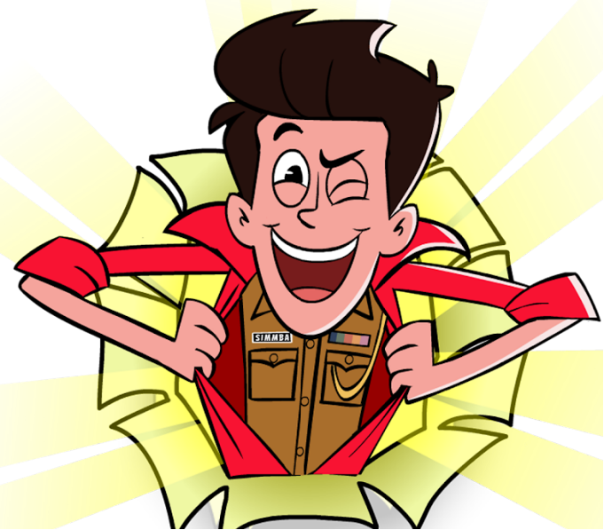

Renisha Antao
A Content and Script Writer/Editor at Reliance Animation .
📧renisha999@gmail.com
Skill stack
JavaScript
C#
C++
Visual Studio Code
Creative Writing
Script Editing
Unity - 2D & 3D
Photoshop
Adobe After Effects
Visual Story Telling
World Building
Show and Content Pitching
Script Writing
Story Writing
Creative Problem Solving
Leadership Skills
Communication Skills
Microsoft Office
Construct 2
Success
💪 BHAIYYAJI BALWAN - Creative Director and Script Editor - Airs on Disney Hungama Channel
05/2021 - Present
- Led the project as the Creative Director and Script Editor at Reliance Animation since its inception, from development to broadcast.
- 104 episodes and counting.
🚨 SMAASHHING SIMMBA - Script Editor - Airs on Discovery Kids Channel
05/2021 - Present
- Edited and increased the standard of the Scripts in this project.
- Saved production time with early deliveries, and coordinated with the writers, studio, and channel stakeholders on crucial aspects to successfully launch the show.
Accomplishments
🏆 Achieved 3rd rank in a National-level short story writing competition organized by the Department
of English, Poona College of Arts, Science & Commerce, Camp, Pune on 15/11/2016.
🏆 Winner of the intra-college street-play competition held by Sardar Dastur Hormazdiar Junior
College, Camp, Pune
Work History
💼 SCRIPT EDITOR | RELIANCE ANIMATION
03/2021 - Present
Created and launched animated TV shows for kids while ensuring the smooth progress of the production pipeline.
- Created and restructured Pitch Bibles and Pitch Decks increasing it's appeal to the stakeholders.
- Developed and managed key relationships with Writers, Director, Editor, Production Lead, and
Channel team.
- Delivered scripts timely and ensured the smooth progress of the production pipeline.
- Performed detailed proofreading duties, reducing errors within scripts and ensured the
development of the theme, plot and characterization
- Developed and created show bibles for multiple shows.
- Developed and approved storyline and series ideas with writers and channel stakeholders while being Standards and Practices compliant.
- Consistently pitched big ideas/executions.
💼 ASST. SCRIPT EDITOR - INTERNSHIP | RELIANCE ANIMATION
05/2019 - 08/2019
Assisted and learnt about the duties and roles of a Script Editor and a Content Writer. Trained in the art of Script Writing for Animation.
- Performed detailed proofreading duties to reduce errors within scripts and ensured the
development of the theme, plot and characterization
- Brainstormed and developed ideas and themes for the animated serie
- Wrote synopsis, summaries, gags and outlines with appropriate style
- Followed trends in industry and target genre to capitalize on emerging trends
- Researched and provided crucial reference materials for the ongoing projects.
Education
🎓 B.Sc in Animation and Gaming: 2017-2020
Bharati Vidyapeeth Deemed University, Pune, Maharashtra.
CGPA: 9.15
🎓 HSC in Science Stream: 2015-2017
Sardar Dastur Hormazdiar Junior College, Pune, Maharashtra.
Percentage: 73.54%
🎓 SSC: 2015
St. Anne's High School, Pune, Maharashtra.
Percentage: 85%